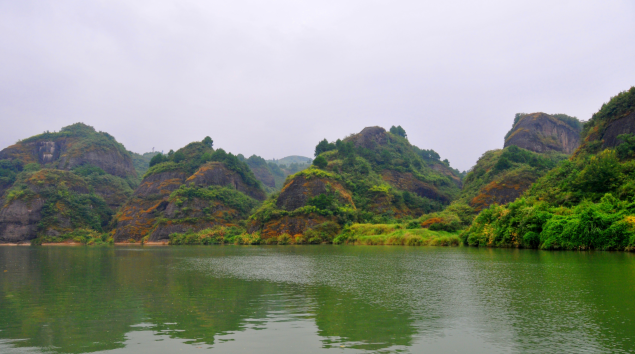

溆浦思蒙丹霞山水
中国溆浦思蒙十里丹霞“小桂林”距县城西十公里。思蒙十里丹霞，十里美 景，三十平方公里的丹霞地貌，分布在溆水两岸，俨然如桂林漓江，秀峰如画。座座小山似巨大的盆景，倒映在碧水之中...
中国溆浦思蒙十里丹霞“小桂林”距县城西十公里。思蒙十里丹霞，十里美 景，三十平方公里的丹霞地貌，分布在溆水两岸，俨然如桂林漓江，秀峰如画。座座小山似巨大的盆景，倒映在碧水之中...
重庆，它是一座山城,起伏的山势和依山而建的楼房让地图在这里显得用处不大，因为地图是平面的，而重庆则是立体的。长江和嘉陵江的交汇处，云天与高楼相接，薄雾弥散，宛如仙境一般，这里的人和这里的美食一样，火辣辣的直接抵达人心，直来直去从不绕弯子,端的是豪爽二字。 小吃、美女、火锅、通通都是重庆的标签。历史的偶然性和必然性在这里得到重合，让它既充满了江湖味又时时被现代化文明充斥着。 每当暮色降临，万家灯火璀璨，流光溢彩。它的夜景可是公认比上海和香港的还要漂亮...
看到了美丽而雄伟的布达拉宫，在蓝天白云的映衬下格外辉煌，而且很是壮观。也是藏族人民最神圣的地方，很多虔诚的信徒。承载的是历史变革之中的柔情。藏族同胞都很淳朴，肃穆的心情...
衡山，又名南岳。由于气候条件较其他四岳为好，处处是茂林修竹，终年翠绿；奇花异草，四时飘香，自然景色十分秀丽，因而又有“南岳独秀”的美称。 祝融峰之高、藏经殿之秀、水帘洞之奇、方广寺之深堪称“衡山四绝”；春观花、夏看云、秋望日、冬赏雪为“衡山四季佳景”。 南岳衡山还有许多名胜古迹和神话传说，吸引了历代各种人物，形成丰富多彩的文化沉积，宛如一个辽阔的人文与山水文化和谐统一、水乳交融的巨型公园...
西沙群岛 它位于海南岛东南约180公里。从东北向西南伸展，在长250公里，宽约150公里的海域里，由45座岛、洲、礁、沙滩组成。西沙群岛岛屿，东面为宜德群岛，由北岛、石岛和永兴岛等7个岛屿组成；西面是永乐群岛，由金银、中建、珊瑚8个岛屿组成。 西沙群岛上栖息着鸟类40多种，常见的有鲣鸟、乌燕鸥、黑枕燕鸥、大凤头燕鸥和暗缘乡眼等。在整个树林的上层及其上空，海鸟成千上万终日盘旋飞翔，千鸣万啭，自成奇观，素称“鸟的天堂”...